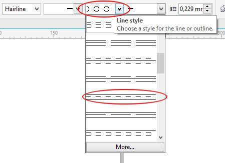
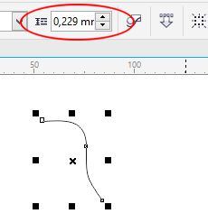

Построение средней (осевой) линии между двумя произвольными кривыми
Fly / 23.04.2015, 02:46
Форум:
Добрый день!
Необходимо построить среднюю (осевую) линию между двумя непараллельными произвольными кривыми. К примеру, провести линию чётко по центру реки с разными по кривизне берегами (как на картах по фарватеру, или когда граница между странами по реке проходит). Пробовал посредством выделения обеих кривых ("берегов") и последующим применением эффекта "Blend" с шагом в 1 ед., но всё-равно визуально видно, что не линия ложится не строго по оси "реки" (в ряде случаев, вообще мазня какая-то получается). Вручную тоже желаемой точности не достичь (при условии, что это всё на глаз делалось, может, зная определённые математические принципы, это и удастся сделать). Заранее спасибо!
Есть очень немного платных макросы, которые могут ее строить. Штатными средствами Корела ее не сделать, сам неоднократно экспериментировал, только программно. В свободное время пишу такой макрос по просьбе одного из заказчиков, но еще не полностью закончил. Насчет "математических принципов" могу сказать, что просчитываются две ближайшие точки и между ними строится прямая, половина которой и будет одной из точек этой срединной линии. Примерно, как на этой картинке
Shark, спасибо за пояснения. По поводу ручного построения требуемой линии - я и сам, в принципе, полагал пойти по подобному пути. Единственное, мне не очень ясно, по какому принципу высчитывать те самые ближайшие точки, между которыми затем проводится соединительный отрезок. Применительно к Вашему примеру, почему зелёные отрезки проложены именно под такими углами к кривым? Не зная математического алгоритма, я бы их расставлял чисто интуитивно, на глаз (примерно как на рисунке), но это ведь не точно...
Fly. Корел конечно такое чудо не может, но зато такое (и не только) может сделать Corel Designer из пакета CorelDRAW Technical Suite. Если сильно надо, можно его скачать с сайта Корел (пробную версию) и сделать то что необходимо. Он может сохранять свои файлы в формате .cdr без всяких проблем и открывать их соответственно тоже.
Например:
Baryga88, спасибо за совет, на Вашем примере, по ходу, то что мне и нужно. Designer скачал и установил, единственное, не подскажете, каким образом в этой проге мне реализовать желаемое?
Fly. Напишу краткую инструкцию... :-) :-)
Вариант 1
1. Corel Designer чуточку отличается от Корел, поэтому я настраиваю его по образу и подобию CorelDRAW. Для этого: Tools > Options. В "ветке" Workspace щелкаем непосредственно на Toolbox (рис. 1) и ставим флажок (по умолчанию он сброшен).
2. Выбираем (например) инструмент Freehand (рис. 2).
Почему "например", потому что у Вас может быть уже готовый набросок и тогда к этому инструменту Вам прибегать не придется, а нужно будет просто выделить имеющуюся кривую. Выделение и прочие приемы работы ничем не отличаются от CorelDRAW, за исключением горячих клавиш.
3. Предполагаю, что рисуем с нуля... Нарисовали кривую. Затем на Панели свойств щелкните кнопку Enhanced outline styles (рис. 3).
На этой же Панели свойств раскройте список Line style и выберите нужный тип линии (рис. 4).

4. Может произойти случай, когда Вы не увидите изменений, потому что параметр Pattern width имеет малое значение (рис. 5).

В этом случае измените (увеличьте) значение и получите нужный результат ( рис. 6).
Вариант 2
Может случиться, что стандартный набор заготовок параллельных линий Вас не устроит. Отредактировать осевую линию, созданную подобным образом не представляется возможным. Тут на помощь приходит новое средство придуманное в CorelDRAW Technical Suite Х7 (в предыдущих версиях не было) - Parallel drawing (рис. 7). Данная кнопка также находится на Панели свойств инструмента Freehand.
После щелчка на этой кнопке появится панель Parallel drawing (рис. 8).
После создания параллельных линий, можно отредактировать отдельно центральную линию, которая будет осевой. Т. к. Designer создаст три одинаковых линии, то чтобы средняя линия стала осевой, надо изменить абрис. Тут все телодвижения не отличаются от таковых в CorelDRAW. Если что-то не будет получаться или будет не понятно, пишите.
Baryga88, спасибо большое за развёрнутое пояснение и за потраченное время! Ваш способ создания параллельных кривых существенно облегчает работу, поскольку раньше я делал подобные операции гораздо более сложным способом (увеличением толщины кривой - применением операции "Convert outline to object" - переходом в режим вида "Wireframe" и последующим ручным удалением ненужных "отпараллеленных" кривых и узлов...). Я уверен, что написанная Вами инструкция окажется полезной не только для меня, но и для многих обучающихся работе в программах Corel, поскольку подобные моему вопросы много где поднимаются и зачастую остаются без исчерпывающего пояснения.
Я как понимаю, Corel Designer - это тот же самый Corel Draw, только с более расширенным функционалом?...
Но моя проблема заключается несколько в другом. Мне нужно провести осевую линию между не строго параллельными кривыми, а между двумя отличающимися между собой произвольными линиями. То есть, как я понимаю, операции должны производиться не на одной кривой, а на двух.
Я не случайно в начале темы привёл пример с "берегами реки": хоть в условном приближении в природе берега реки идут примерно параллельно, но при этом неизбежно отличаются от друг друга кривизной контура. Таким образом, меня интересует, возможно ли выделить две разные произвольные кривые (см. рисунок в приложении) и применить какую-либо операцию, чтобы программа сама проложила трассу осевой линии между ними? Возможно, в Corel Design есть такие механизмы (я, правда, скачал Х5 версию)?
Если возвращаться к моему "географическому" примеру, на многих картах это реализуется (например, границы, навигационная обстановка, линии глубин и т.п.). Это я к тому, что, значит, техническая возможность для этого есть, ведь, наверно, уже все карты сейчас в векторных редакторах создаются...
Ещё раз спасибо за ответ!
Fly. Вы правильно понимаете, Corel Designer - это тот же Corel Draw, но с большим количеством инструментов и больше подходит к технической иллюстрации. Если я правильно понял проблему, то решить ее опять же можно выше описанным способом. Только скачать Вам надо версию Х7, потому что только сейчас появился инструмент Parallel drawing. В этой ситуации, я бы сделал так....
Т. к. у Вас по большому счету "берега реки" имеют разные очертания, то ничего не мешает подредактировать их и осевую линию. Конечно повозиться придется. Но я не думаю, что Вам в этой ситуации требуется точность, до десятых миллиметра. На рис. 1 я показал исходную линию с параллельной и осевой линией.
А потом инструментом Shape подредактировал форму линий, по образу, как это бывает в руслах рек (рис. 2).
Просто я хочу сказать, что выход можно найти. Мне кажется это будет проще или во всяком случае быстрее, чем искать не известно где макрос, которого может в природе и не оказаться.
Кроме того, мне думается, что Вам нужна не осевая линия в прямом смысле слова, а скорее "центральная линия", так сказать что-то усредненное, но очень похожее на осевую линию.
Да, кстати, можете попробовать сделать вашу осевую линию с помощью перетекания, указав в перетекании количество объектов - 1. Потом просто разбить его и изменить абрис центральной линии. Вот пример сделанный перетеканием (см. рис. ниже)
Baryga88, действительно, абсолютной точности в моей задаче не требуется. Тему завёл, в общем-то, в целях самообразования, хотелось просто понять, возможно ли это к реализации только "кореловскими" автоматическими средствами, чтобы потом потенциально применять в дальнейшем. По поводу макросов, согласен с Вами, в моём единичном эпизоде вряд ли стоит тратить время на их поиски. Так что буду пытаться осуществлять свою задачу в ручном режиме, обладая теперь Вашими приёмами :) Спасибо!
Страницы